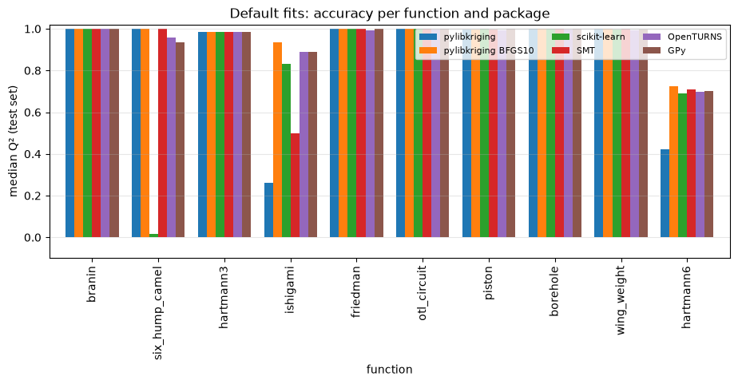

Python
33/36 passed
Kriging vs scikit-learn, SMT, OpenTURNS, GPy
How does libKriging compare with the Python GP packages, first as an implementation (same hyperparameters → same numbers), then as a tool (default fits: accuracy, calibration, cost) on 10 functions?
Reference. Scikit-learn, SMT, OpenTURNS and GPy.